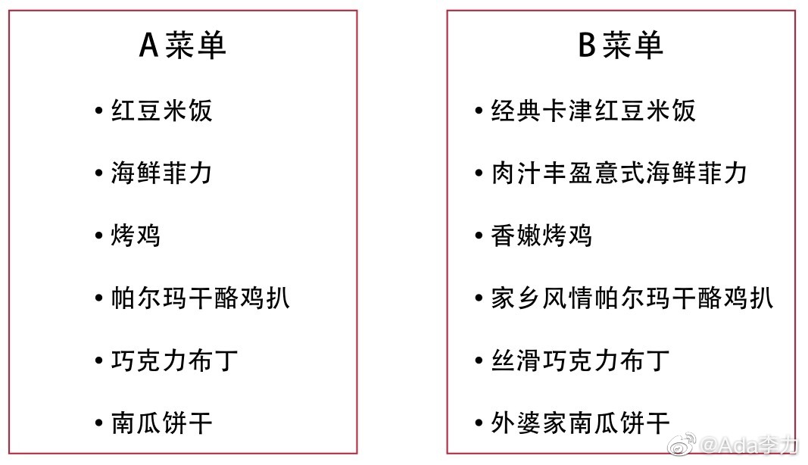

#一个人的企业#
我以前不理解美容界为什么每年都会出那么多花哨的名字，经常我得判断下这些花哨名字后的原理，光子，射频，还是仅仅物理按摩了下。我一直觉得这是蒙骗消费者的行为。
直到看到两个菜单，实际菜内容是一样的，只是名字不一样。不用数据告诉我就知道，右边花哨的菜单名，能标上更高的价格，而且消费者还乐于买单。
于是马上理解美容界的花哨命名的作用了，并且蛮佩服这种创意。因为，起个诱人的好名字，也是很费脑细胞，很专业的事情。
为让大家对命名重要性更有印象，补充个案例：
"比如两块放了一天的巧克力蛋糕。如果其中一块名字叫“巧克力蛋糕”，另一块叫“比利时黑森林加量巧克力蛋糕”，人们就会买第二块。这不稀奇。更有趣的是，人们尝了以后，与跟它一模一样的“普通老蛋糕”比起来，觉得它的味道比较好吃。黑森林并不在比利时，连这都无所谓。
我们知道这是真的，因为我们在真实人群中测试过。" from《好好吃饭》
我以前不理解美容界为什么每年都会出那么多花哨的名字，经常我得判断下这些花哨名字后的原理，光子，射频，还是仅仅物理按摩了下。我一直觉得这是蒙骗消费者的行为。
直到看到两个菜单，实际菜内容是一样的，只是名字不一样。不用数据告诉我就知道，右边花哨的菜单名，能标上更高的价格，而且消费者还乐于买单。
于是马上理解美容界的花哨命名的作用了，并且蛮佩服这种创意。因为，起个诱人的好名字，也是很费脑细胞，很专业的事情。
为让大家对命名重要性更有印象，补充个案例：
"比如两块放了一天的巧克力蛋糕。如果其中一块名字叫“巧克力蛋糕”，另一块叫“比利时黑森林加量巧克力蛋糕”，人们就会买第二块。这不稀奇。更有趣的是，人们尝了以后，与跟它一模一样的“普通老蛋糕”比起来，觉得它的味道比较好吃。黑森林并不在比利时，连这都无所谓。
我们知道这是真的，因为我们在真实人群中测试过。" from《好好吃饭》
- 